What it takes to label rare traffic incidents from camera data
Incident labels are rare, so I tested a cheap way to find them: rank camera frames with signals that need no labels, have a vision-language model check the candidates, and confirm by hand. I ran it on 21,885 real frames from LTA's 90 expressway cameras, around 10 news-reported crashes and the same hours a week earlier, and labelled 235 frames without seeing the model's answers.
1 of the 235 frames showed an incident. The model flagged 32, and none of them held up.
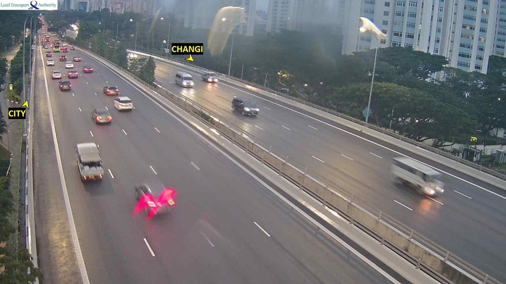
Camera 3797, 2 Sep 2025 07:01
The model:“a vehicle is overturned and emitting red smoke or flames in the center lanes, indicating a collision.” On review: It is a car's tail lights, smeared by the camera's exposure. Traffic is moving normally.
All 235 frames I labelled
Each tile is one frame, in the order I labelled them. Nearly every frame shows ordinary traffic, and the model's alarms land on it too.
incident, confirmed by memodel said incidentno incident
The cameras didn't see the crashes
None of the 9 crashes reported within 1 km of a camera was visible in that camera's frames 1 and 10 minutes after the report (0 of 28 frames). The random sample had none either (0 of 80; 95% interval 0 to 4.6%). A camera sees only a few hundred metres of road, and a crash takes longer than 10 minutes to clear, so these crashes were out of the camera's view, not between snapshots.
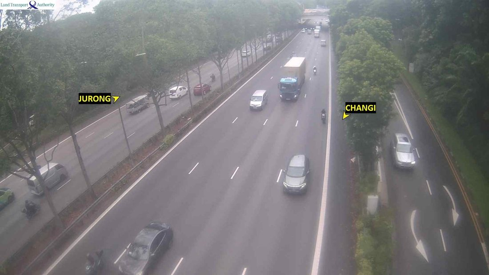
Camera 6705, 30 May 2026 08:21
Crash reported 08:20 on the PIE towards Tuas, before the Adam Road exit (5 cars, 1 motorcycle). Nearest camera, 1 minute later.
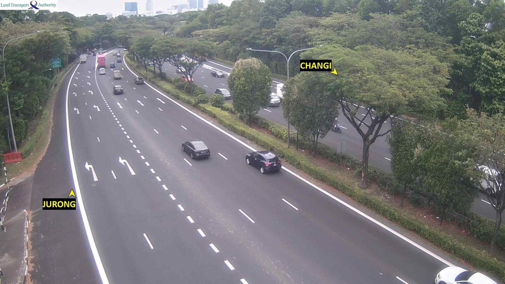
Camera 6712, 13 Feb 2026 11:46
Bus fire reported 11:45 on the PIE towards Tuas, before the Clementi Road exit. Nearest camera, 2 minutes later.
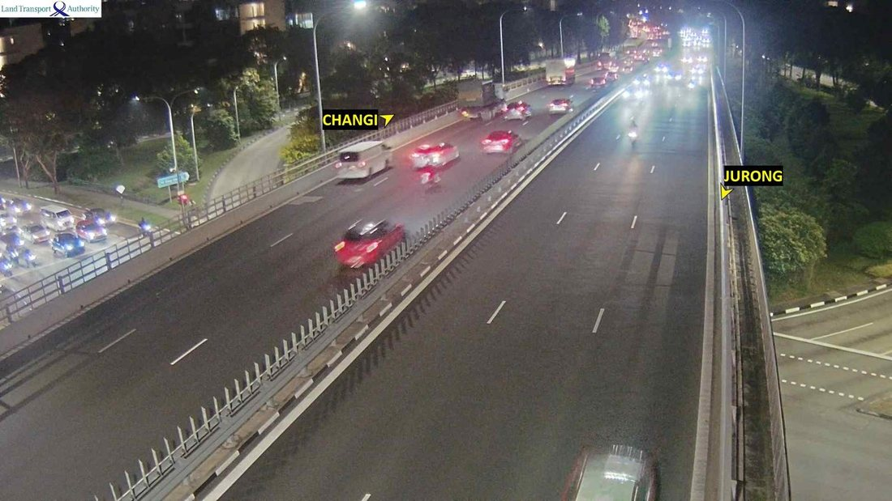
Camera 5795, 21 Feb 2025 21:52
14-vehicle chain collision reported 21:50 on the PIE towards Changi, after the Jalan Eunos exit. Nearest camera, 2 minutes later.
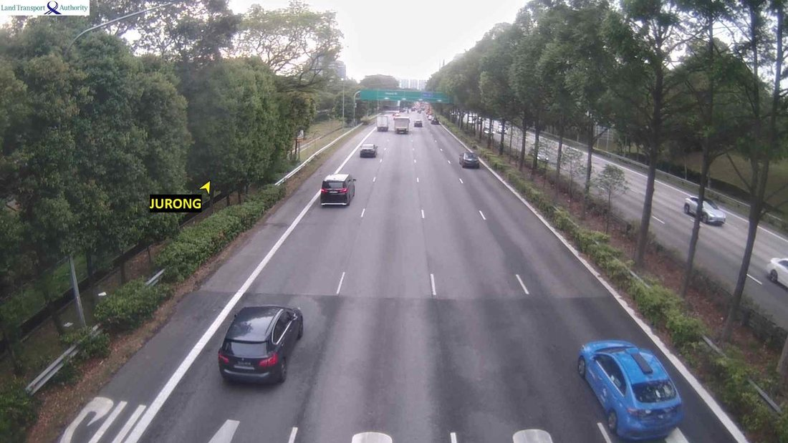
Camera 4706, 31 Mar 2026 18:46
Fatal crash reported 18:45 on the AYE towards Tuas, after the South Buona Vista Road exit. Camera 390 m away, 2 minutes later.
An off-the-shelf model over-flags
Qwen3-VL 32B saw each frame with the one before it, was told to report only what it could see, and was allowed to say it couldn't tell. It flagged 32 of 235 frames. On review none showed an incident (95% interval 0 to 11%), and it missed the one frame that did. Its errors follow patterns:
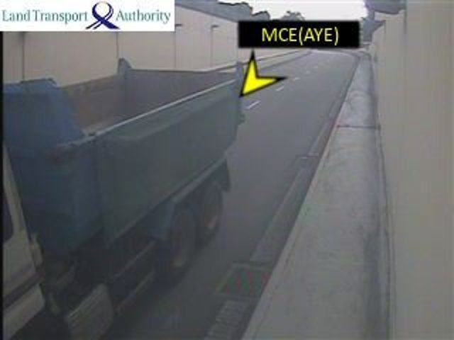
Camera 1502, 14 Mar 2026 10:21
Close-up read as stopped. Model: “A large truck is stopped in the right lane, occupying part of the carriageway, which is not present in the earlier frame.” On review: A tipper truck passing right under a tunnel camera. Nothing is stopped.
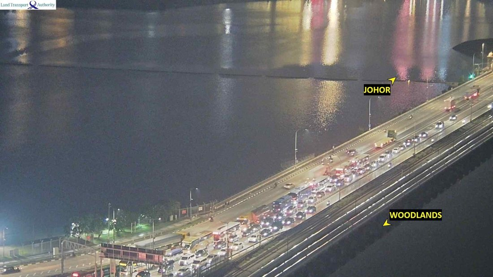
Camera 2701, 29 May 2026 21:11
Congestion read as an incident. Model: “Multiple vehicles are stopped in the center lanes, forming a dense queue, which is not present in image 1, indicating a sudden stoppage.” On review: The evening queue on the Causeway towards Johor: normal for that hour.
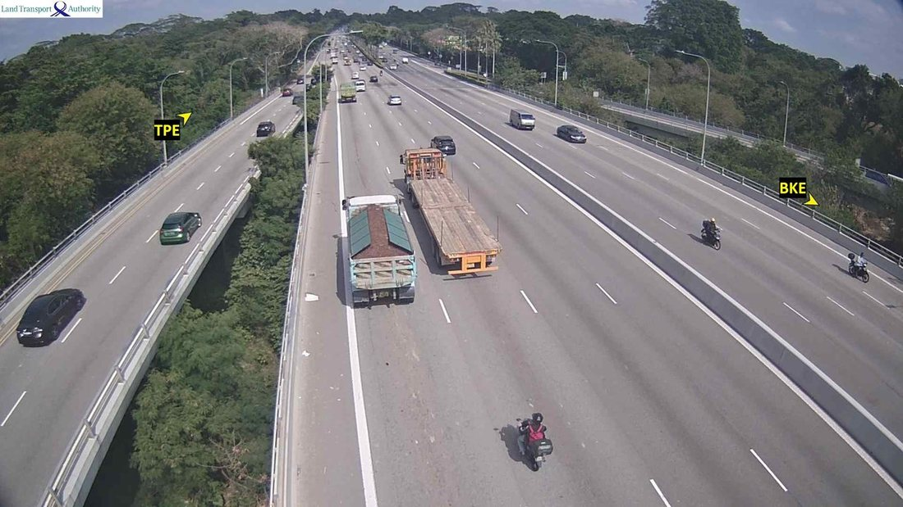
Camera 9701, 31 Jan 2026 15:55
Moving heavy vehicles read as stopped. Model: “Two large trucks are stopped in the live lanes, with one appearing to be a flatbed carrying a load, obstructing traffic.” On review: Both trucks are travelling with the traffic around them.
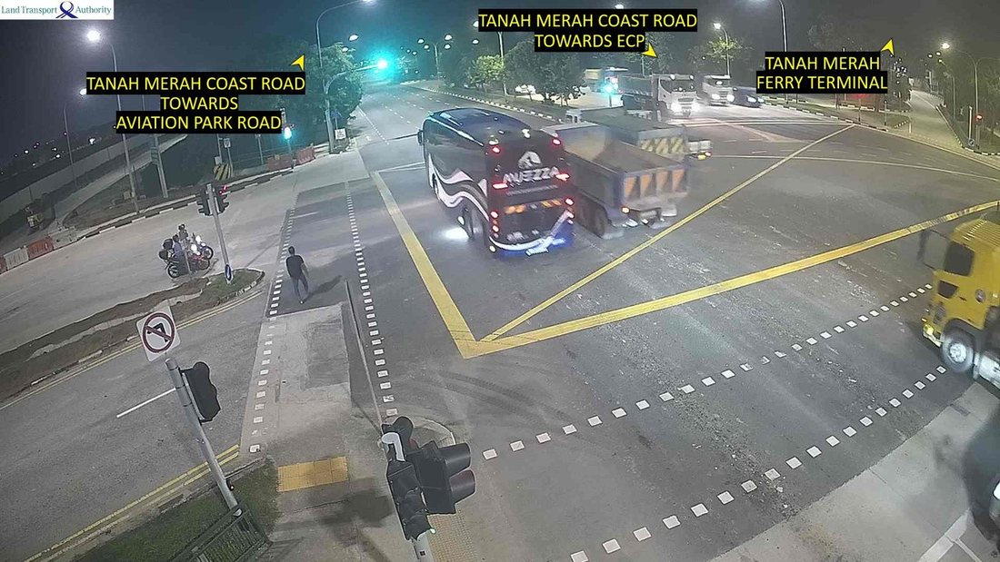
Camera 1113, 30 Dec 2025 19:51
Close vehicles read as a collision. Model: “a black bus and a truck are in contact in the middle of the intersection, indicating a collision.” On review: A bus and a truck turning through a signalised junction; no contact is visible.
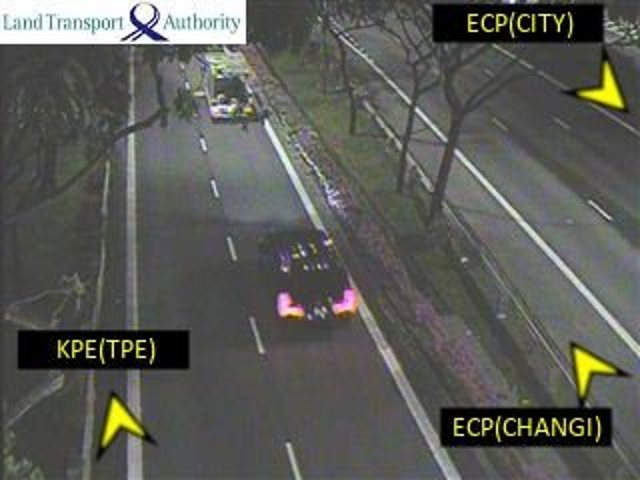
Camera 1001, 2 Sep 2025 06:31
Brake lights read as stopped. Model: “A dark vehicle is stopped in the center lane, with its brake lights illuminated, and no movement compared to image 1.” On review: A low-resolution dawn frame of a car braking in moving traffic.
The response shows even when the crash doesn't
In three of the reported crashes, frames 1 to 31 minutes later show police, SCDF or recovery vehicles with lights on, in the queue the crash caused. I labelled them "no incident" because the crash itself is out of the camera's view, but they are the clearest visual trace of one.
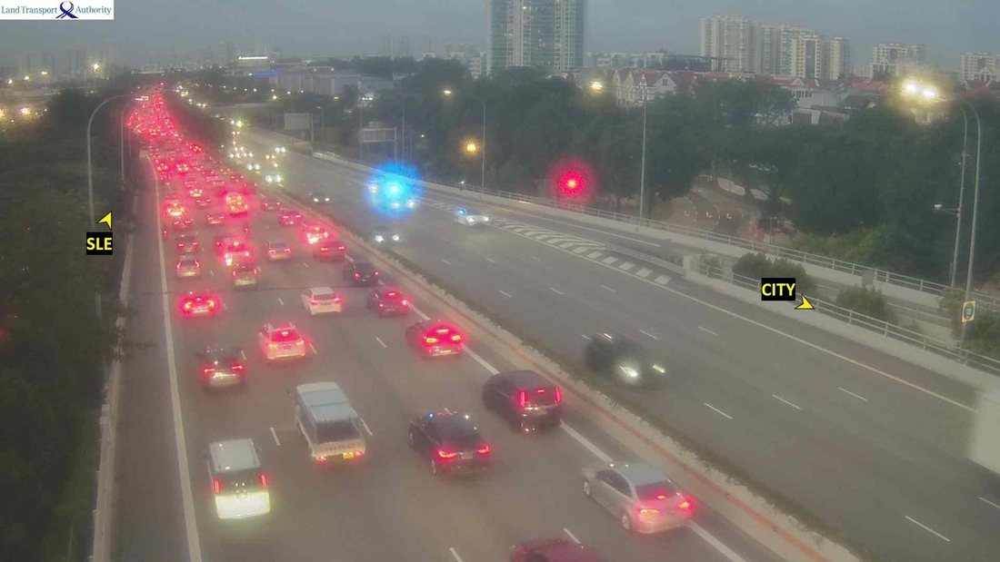
Camera 1702, 6 Jan 2026 19:21
CTE near Braddell, 1 minute after a four-car collision was reported towards SLE. Police lights on the right; the SLE-bound side is jammed.
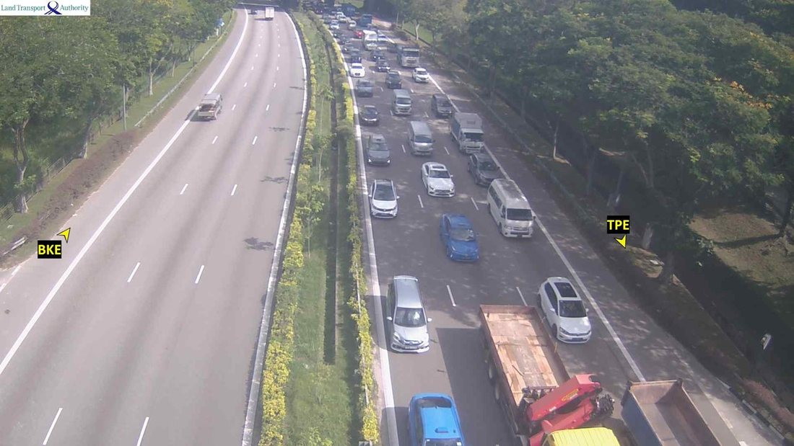
Camera 9706, 14 Mar 2026 10:16
SLE, 11 minutes after a five-vehicle crash was reported towards BKE. A recovery vehicle in the queue; the BKE-bound carriageway is almost empty.
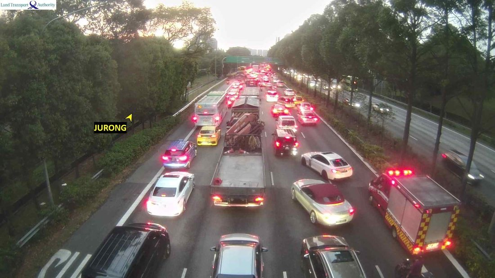
Camera 4706, 31 Mar 2026 19:16
AYE towards Tuas, 31 minutes after a fatal crash was reported 390 m away. An SCDF vehicle with lights on in the queue. Surfaced by the image-novelty ranking (#43).
The one incident
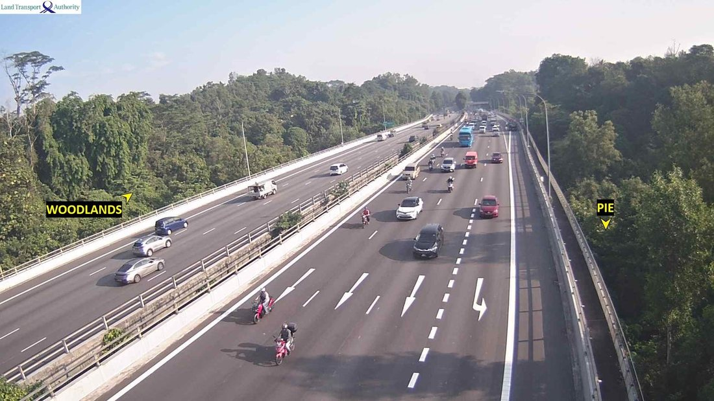
Camera 2707, 23 May 2026 08:41
Two motorcyclists stopped on the BKE shoulder, 23 May 2026 08:41. No news report: a control window. Surfaced by the image-novelty ranking at #28; the model said no incident.
What I'd build instead
The ranking and the model both need work, but the first problem is coverage: the cameras see a small part of the road, and most incidents happen out of their view. So I would turn the order around:
Find where and when to look from a signal that covers every road, all the time: speed bands, loop detectors, the incident feed.
Pull 30 to 60 seconds of video from the nearest cameras, not single stills. Stopped vehicles and responders are clear in motion and ambiguous in one frame.
Measure the model's precision on a small labelled set before trusting it, and point it at the cues that showed up here: vehicles that don't move, and emergency or recovery vehicles.
Send what's left to a person. Confirmed labels retrain the cheap ranker, so each pass needs fewer human checks.
How I tested it
Frames. LTA has published live images for only 8 cameras since mid-2026, but data.gov.sg still keeps the history of all 90. For each of 10 crashes reported in the news between February 2025 and May 2026: every camera, every 5 minutes, from 20 minutes before to 40 minutes after, plus the same hour a week earlier as a control.
Rankings, no labels needed. Image novelty (CLIP embedding distance to the same camera's other frames, ignoring those within 45 minutes), CLIP zero-shot similarity to incident descriptions, and the two combined. The top 50 camera-time windows from each, 80 random frames and 28 frames at the reported crashes made a shuffled review set of 235.
Labels. One person, me, blind to the rankings and the model. Incident means a crash, a stopped or broken-down vehicle, debris, responders attending, or people on the carriageway. Congestion alone isn't.
Model. Qwen3-VL 32B through NUS SoC's API, temperature 0, a fixed JSON reply with the option to abstain, about 6 seconds per frame.
The numbers
Frames reviewed
Frames
Incidents
Random sample
80
0
Frames at the reported crashes
28
0
Image novelty, top 50 windows
50
1
CLIP zero-shot, top 50 windows
50
0
Both combined, top 50 windows
50
0
Flagged by the model
32
0
The one incident was ranked #28 by image novelty. With counts this small the intervals are wide; the point is the order of magnitude.
Limits
235 frames and 10 crashes: enough to show the pattern, not to rank models precisely.
One labeller, single frames 5 minutes apart. Some incidents are only clear on video.
One general-purpose model and one prompt, untuned. A better prompt or a fine-tuned model may do better; the point is to measure before trusting.
Public cameras only: one still every few minutes. Video from an operational camera network would show far more.
No speed or loop-detector data: it exists only live, so it couldn't be matched to these past crashes.